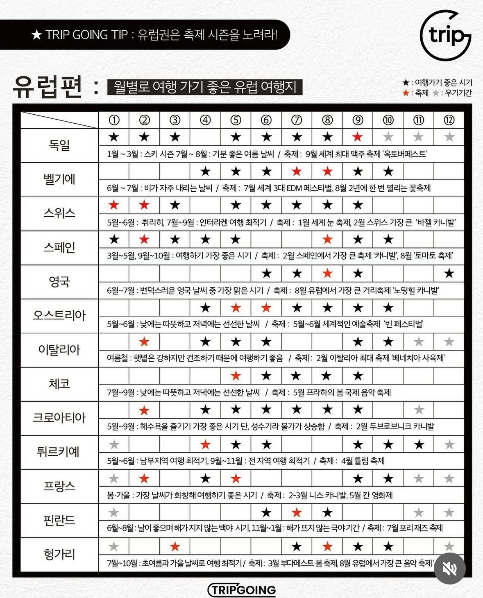

etc · 사진 · 2026-11-24
월별로 여행 가기 좋은 여행지 (유럽편)
트립고잉이 유럽 13개국의 여행하기 좋은 시기와 대표 축제를 월별 표로 정리한 자료다.

- 독일은 1~3월 스키 시즌과 7~8월 여름이 좋고, 9월에 세계 최대 맥주 축제 '옥토버페스트'가 열린다.
- 스페인은 3~5월과 9~10월이 여행하기 가장 좋은 시기이며, 2월 카니발과 8월 토마토 축제가 있다.
- 영국은 6~7월이 가장 맑은 시기이고, 8월에 유럽에서 가장 큰 거리축제인 '노팅힐 카니발'이 열린다.
- 오스트리아는 5~6월 날씨가 좋고 같은 시기에 세계적인 예술축제 '빈 페스티벌'이 열린다.
- 크로아티아는 5~9월이 해수욕에 가장 좋지만 성수기라 물가가 상승한다.
- 핀란드는 6~8월 백야, 11~1월 극야 기간이 특징이며 7월에 포리 재즈 축제가 있다.
- 프랑스는 봄·가을이 여행하기 좋고, 2~3월 니스 카니발과 5월 칸 영화제가 열린다.